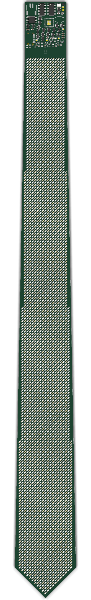
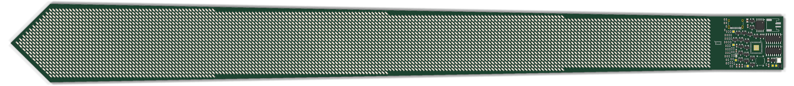
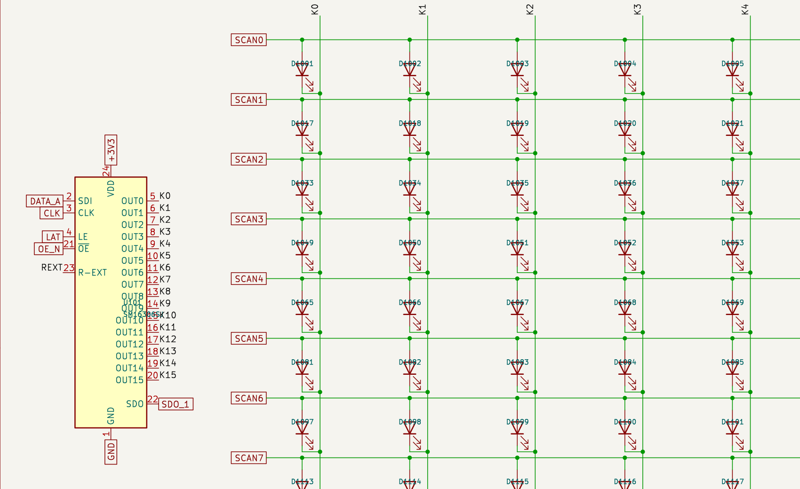

KTE · projekt 5a
Kravata s 3 699 červenými LED pod látkou. Když je někdo blízko, zklidní se a jen pomalu dýchá.


3 699
LED 0603 na mřížce 2,1 mm
45°
pootočené, aby se vešly
2
vrstvy flexu, limit JLC 490 mm
15
budičů na zadní straně

Simulátor se načítá…
Hledá se sim/index.html vedle prezentace.
94 mA
průměr typického večera
13,6 h
z baterie 1 500 mAh
316 mA
strop firmwaru (25 % jasu)
130 mA
max. proud jednoho řádku
Proud z baterie podle show (mA, simulátor)
| na kus | 100 ks | 1 000 ks | 10 000 ks |
|---|---|---|---|
| Součástky (LED = 69 %) | 18,52 € | 17,61 € | 17,39 € |
| Flex DPS (odhad) | 27,00 € | 8,10 € | 5,40 € |
| Osazení SMT, 2 strany | 13,14 € | 9,06 € | 6,03 € |
| Baterie, látka, montáž, balení | 18,57 € | 7,83 € | 5,90 € |
| Doprava, clo, NRE a certifikace | 58,44 € | 11,06 € | 2,78 € |
| Celkem v ČR | 135,66 € | 53,67 € | 37,50 € |
VLASTNÍ E-SHOP
139 €
marže 49 % při 1 000 ks
OBCHODY
169 €
marže 30 % při 1 000 ks
FIRMY A AKCE
85 €
bez DPH, marže 37 %
Hotové: schéma, rozmístění na flexu, kusovník, cena, výdrž a simulátor.
Zbývá: vedení desky, nabídka JLC na flex a test ohybu budičů.